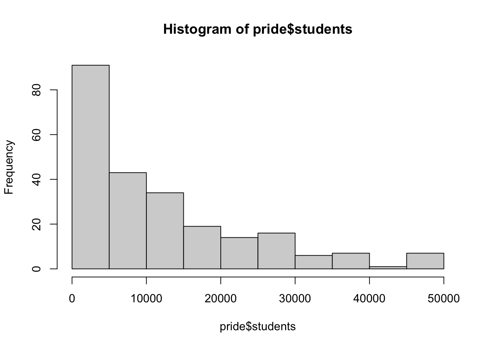

── Attaching core tidyverse packages ──────────────────────── tidyverse 2.0.0 ──
✔ dplyr 1.1.4 ✔ readr 2.1.5
✔ forcats 1.0.0 ✔ stringr 1.5.1
✔ ggplot2 3.5.1 ✔ tibble 3.2.1
✔ lubridate 1.9.3 ✔ tidyr 1.3.1
✔ purrr 1.0.2
── Conflicts ────────────────────────────────────────── tidyverse_conflicts() ──
✖ dplyr::filter() masks stats::filter()
✖ dplyr::lag() masks stats::lag()
ℹ Use the conflicted package (<http://conflicted.r-lib.org/>) to force all conflicts to become errors
here() starts at /Users/tannersmalling/Desktop/EPI590R Final ProjectFinal Project
@herehere is using campus pride data taken from https://github.com/rfordatascience/tidytuesday#datasets Campus Pride Index.
There are approximately 238 universities in this data-set.
tbl_summary(
pride,
by = campus_name,
include = c(campus_name, students, rating),
label = list(
campus_name = "University",
students = "Student Population",
rating = "Rating"
))Characteristic |
Adelphi University |
Allegheny College |
Antioch College |
Appalachian State University |
Art Academy of Cincinnati |
Augsburg University |
Baldwin Wallace University |
Bard College at Simon’s Rock |
Bates College |
Bentley University |
Bergen Community College |
Big Sandy Community and Technical College |
Binghamton University SUNY |
Bluegrass Community & Technical College (BCTC) |
Bridgewater State University |
Bryant University |
Butte College |
California State Polytechnic University-Pomona |
California State University-Bakersfield |
California State University, Chico |
California State University, Long Beach or Long Beach State |
California State University, Northridge |
Camden County College |
Catawba College |
Centre College |
Clark University |
Cleveland State University |
Colby College |
Colgate University |
College of Staten Island/CUNY |
College of Wooster |
Colorado College |
Cuyahoga Community College Eastern Campus |
Cuyahoga Community College Metro Campus |
Cuyahoga Community College Western Campus |
Cuyahoga Community College Westshore Campus |
Dakota State University |
Davidson College |
Diablo Valley College |
Dickinson College |
Dominican University of California |
Drew University |
Drexel University |
Dutchess Community College |
Earlham College |
East Carolina University |
Eastern Mennonite University |
Eastern Michigan University |
Eckerd College |
Elon University |
Emerson College |
Emory University |
Emporia State University |
Ferris State University |
Fitchburg State University |
Florida International University |
Forsyth Technical Community College |
Fort Lewis College |
Gallaudet University |
George Mason University |
Georgia College & State University |
Georgia Southern University |
Gettysburg College |
Gonzaga University |
Guilford College |
Gwynedd Mercy University |
Hartwick College |
Harvard College |
Haverford College |
Henry Ford Community College |
Hobart and William Smith Colleges |
Hofstra University |
Illinois State University |
Indiana University, Bloomington |
Ithaca College |
James Madison University |
Joliet Junior College |
Juniata College |
Kalamazoo College |
Kansas State University |
Kean University |
Kent State University |
Kenyon College |
Knox College |
Kutztown University |
Lawrence University |
Lebanon Valley College |
Lehigh University |
Linfield University |
Macalester College |
Manhattan School of Music |
Mars Hill University |
Metropolitan State University of Denver |
Miami University-Oxford |
Michigan State University |
Michigan Technological University |
Millersville University of Pennsylvania |
Milwaukee Institute of Art & Design |
Missouri Science & Technology |
MIT |
Mohawk Valley Community College |
Montana State University-Bozeman |
Montclair State University |
Montserrat College of Art |
Napa Valley College |
Nazareth College |
New Mexico State University |
Norco College |
North Dakota State University |
Northeastern Illinois University |
Northern Arizona University |
Northern Illinois University |
Northern Kentucky University |
Northwestern University |
Oakland University |
Oregon State University |
Otis College of Art and Design |
Pace University |
Point Park University |
Portland State University |
Purdue University |
Ramapo College of New Jersey |
Randolph College |
Red Rocks Community College |
Regis College |
Rhode Island College |
Rhodes College |
Rochester Institute of Technology |
Roger Williams University |
Rutgers, The State University of New Jersey-New Brunswick |
Sacred Heart University |
Salt Lake Community College |
San Diego State University |
San Francisco State University |
Skyline College |
Slippery Rock University |
Southern Illinois University Carbondale |
Southern Methodist University |
Southern New Hampshire University |
Southwestern University |
St. John’s College, Annapolis |
Stevens Institute of Technology |
Stockton University |
Suffolk University |
SUNY Oneonta |
SUNY ROCKLAND COMMUNITY COLLEGE |
SUNY Westchester Community College |
Susquehanna University |
Swarthmore College |
Syracuse University |
Texas State University |
The College of Idaho |
The Evergreen State College |
The Pennsylvania State University |
The University of Alabama |
The University of Findlay |
Tidewater Community College |
Towson University |
Trinity College |
Tufts University |
Union College |
University at Albany - SUNY |
University at Buffalo |
University California, Irvine |
University of Arkansas at Little Rock |
University of Central Arkansas |
University of Colorado at Boulder |
University of Colorado at Colorado Springs |
University of Houston |
University of Illinois Chicago |
University of Kansas |
University of Kentucky |
University of La Verne |
University of Louisville |
University of Maine at Farmington |
University of Maine at Machias |
University of Mary Washington |
University of Maryland, Baltimore County |
University of Maryland, College Park |
University of Massachusetts, Amherst |
University of Miami |
University of Michigan-Ann Arbor |
University of Michigan-Dearborn |
University of Minnesota, Morris |
University of Missouri - St. Louis |
University of Missouri-Kansas City |
University of Mount Union |
University of Nebraska at Kearney |
University of Nebraska at Omaha |
University of New Hampshire-Main Campus |
University of New Haven |
University of North Carolina at Charlotte |
University of North Dakota |
University of Northern Colorado |
University of Oklahoma-Norman Campus |
University of Pittsburgh at Bradford |
University of Pittsburgh-Main Campus |
University of Puget Sound |
University of Richmond |
University of Rochester |
University of Tennessee |
University of Texas Arlington |
University of Texas at Dallas |
University of the Arts |
University of Toledo |
University of Vermont |
University of Virginia |
University of Wisconsin |
University of Wisconsin - Eau Claire |
University of Wisconsin - Green Bay |
University of Wisconsin - Milwaukee |
University of Wisconsin - Oshkosh |
University of Wisconsin - Superior |
University of Wisconsin - Whitewater |
University of Wisconsin-Stevens Point |
Virginia Commonwealth University |
Virginia State University |
Virginia Tech |
Virginia Wesleyan University |
Washington College |
Washington State University |
Washington University in St. Louis |
Wayne State University |
Wentworth Institute of Technology |
West Chester University of Pennsylvania |
West Virginia University |
Western Colorado University |
Western Kentucky University |
Wheaton College |
Whitman College |
Wichita State University |
Widener University |
William & Mary |
William Paterson University of New Jersey |
Woodbury University |
Worcester State University |
Xavier University |
Youngstown State University |
|---|---|---|---|---|---|---|---|---|---|---|---|---|---|---|---|---|---|---|---|---|---|---|---|---|---|---|---|---|---|---|---|---|---|---|---|---|---|---|---|---|---|---|---|---|---|---|---|---|---|---|---|---|---|---|---|---|---|---|---|---|---|---|---|---|---|---|---|---|---|---|---|---|---|---|---|---|---|---|---|---|---|---|---|---|---|---|---|---|---|---|---|---|---|---|---|---|---|---|---|---|---|---|---|---|---|---|---|---|---|---|---|---|---|---|---|---|---|---|---|---|---|---|---|---|---|---|---|---|---|---|---|---|---|---|---|---|---|---|---|---|---|---|---|---|---|---|---|---|---|---|---|---|---|---|---|---|---|---|---|---|---|---|---|---|---|---|---|---|---|---|---|---|---|---|---|---|---|---|---|---|---|---|---|---|---|---|---|---|---|---|---|---|---|---|---|---|---|---|---|---|---|---|---|---|---|---|---|---|---|---|---|---|---|---|---|---|---|---|---|---|---|---|---|---|---|---|---|---|---|---|---|---|---|---|---|---|---|---|
| Student Population | 7,859 (7,859, 7,859) | 1,800 (1,800, 1,800) | 125 (125, 125) | 20,436 (20,436, 20,436) | 260 (260, 260) | 3,537 (3,537, 3,537) | 3,500 (3,500, 3,500) | 400 (400, 400) | 1,800 (1,800, 1,800) | 4,100 (4,100, 4,100) | 14,585 (14,585, 14,585) | 1,193 (1,193, 1,193) | 18,000 (18,000, 18,000) | 14,500 (14,500, 14,500) | 10,000 (10,000, 10,000) | 3,287 (3,287, 3,287) | 4,816 (4,816, 4,816) | 23,717 (23,717, 23,717) | 7,000 (7,000, 7,000) | 16,251 (16,251, 16,251) | 36,846 (36,846, 36,846) | 36,000 (36,000, 36,000) | 6,425 (6,425, 6,425) | 1,200 (1,200, 1,200) | 1,450 (1,450, 1,450) | 2,300 (2,300, 2,300) | 16,000 (16,000, 16,000) | 2,299 (2,299, 2,299) | 3,228 (3,228, 3,228) | 10,185 (10,185, 10,185) | 2,000 (2,000, 2,000) | 2,300 (2,300, 2,300) | 3,394 (3,394, 3,394) | 3,094 (3,094, 3,094) | 7,000 (7,000, 7,000) | 2,183 (2,183, 2,183) | 3,100 (3,100, 3,100) | 1,850 (1,850, 1,850) | 7,854 (7,854, 7,854) | 2,400 (2,400, 2,400) | 1,531 (1,531, 1,531) | 2,100 (2,100, 2,100) | 14,000 (14,000, 14,000) | 6,500 (6,500, 6,500) | 1,200 (1,200, 1,200) | 29,131 (29,131, 29,131) | 1,000 (1,000, 1,000) | 10,500 (10,500, 10,500) | 1,950 (1,950, 1,950) | 6,500 (6,500, 6,500) | 3,783 (3,783, 3,783) | 14,769 (14,769, 14,769) | 6,100 (6,100, 6,100) | 10,222 (10,222, 10,222) | 3,500 (3,500, 3,500) | 34,000 (34,000, 34,000) | 2,890 (2,890, 2,890) | 3,443 (3,443, 3,443) | 1,454 (1,454, 1,454) | 39,150 (39,150, 39,150) | 6,800 (6,800, 6,800) | 21,000 (21,000, 21,000) | 2,400 (2,400, 2,400) | 7,450 (7,450, 7,450) | 1,200 (1,200, 1,200) | 1,724 (1,724, 1,724) | 1,100 (1,100, 1,100) | 6,500 (6,500, 6,500) | 1,400 (1,400, 1,400) | 13,000 (13,000, 13,000) | 2,396 (2,396, 2,396) | 9,533 (9,533, 9,533) | 20,000 (20,000, 20,000) | 49,695 (49,695, 49,695) | 6,000 (6,000, 6,000) | 22,000 (22,000, 22,000) | 10,000 (10,000, 10,000) | 1,600 (1,600, 1,600) | 1,458 (1,458, 1,458) | 20,000 (20,000, 20,000) | 11,610 (11,610, 11,610) | 28,000 (28,000, 28,000) | 1,730 (1,730, 1,730) | 1,300 (1,300, 1,300) | 8,000 (8,000, 8,000) | 1,500 (1,500, 1,500) | 1,651 (1,651, 1,651) | 6,950 (6,950, 6,950) | 1,750 (1,750, 1,750) | 2,094 (2,094, 2,094) | 1,035 (1,035, 1,035) | 1,000 (1,000, 1,000) | 21,000 (21,000, 21,000) | 24,000 (24,000, 24,000) | 50,000 (50,000, 50,000) | 7,238 (7,238, 7,238) | 7,500 (7,500, 7,500) | 900 (900, 900) | 9,000 (9,000, 9,000) | 11,000 (11,000, 11,000) | 5,000 (5,000, 5,000) | 16,902 (16,902, 16,902) | 21,000 (21,000, 21,000) | 370 (370, 370) | 5,000 (5,000, 5,000) | 3,000 (3,000, 3,000) | 16,765 (16,765, 16,765) | 10,000 (10,000, 10,000) | 14,500 (14,500, 14,500) | 10,275 (10,275, 10,275) | 29,000 (29,000, 29,000) | 16,234 (16,234, 16,234) | 16,000 (16,000, 16,000) | 21,215 (21,215, 21,215) | 17,170 (17,170, 17,170) | 28,000 (28,000, 28,000) | 1,100 (1,100, 1,100) | 12,835 (12,835, 12,835) | 4,000 (4,000, 4,000) | 25,000 (25,000, 25,000) | 49,000 (49,000, 49,000) | 5,041 (5,041, 5,041) | 650 (650, 650) | 4,297 (4,297, 4,297) | 3,014 (3,014, 3,014) | 5,776 (5,776, 5,776) | 2,000 (2,000, 2,000) | 18,897 (18,897, 18,897) | 4,000 (4,000, 4,000) | 48,000 (48,000, 48,000) | 10,216 (10,216, 10,216) | 16,158 (16,158, 16,158) | 32,000 (32,000, 32,000) | 29,905 (29,905, 29,905) | 5,599 (5,599, 5,599) | 8,500 (8,500, 8,500) | 14,000 (14,000, 14,000) | 12,373 (12,373, 12,373) | 3,400 (3,400, 3,400) | 1,500 (1,500, 1,500) | 450 (450, 450) | 6,825 (6,825, 6,825) | 9,080 (9,080, 9,080) | 7,288 (7,288, 7,288) | 5,514 (5,514, 5,514) | 7,500 (7,500, 7,500) | 13,000 (13,000, 13,000) | 2,300 (2,300, 2,300) | 1,699 (1,699, 1,699) | 14,422 (14,422, 14,422) | 38,000 (38,000, 38,000) | 987 (987, 987) | 2,100 (2,100, 2,100) | 46,184 (46,184, 46,184) | 38,000 (38,000, 38,000) | 3,500 (3,500, 3,500) | 7,028 (7,028, 7,028) | 16,517 (16,517, 16,517) | 2,159 (2,159, 2,159) | 11,926 (11,926, 11,926) | 2,150 (2,150, 2,150) | 18,000 (18,000, 18,000) | 29,850 (29,850, 29,850) | 29,000 (29,000, 29,000) | 6,712 (6,712, 6,712) | 12,000 (12,000, 12,000) | 30,000 (30,000, 30,000) | 12,017 (12,017, 12,017) | 40,000 (40,000, 40,000) | 30,539 (30,539, 30,539) | 28,000 (28,000, 28,000) | 30,000 (30,000, 30,000) | 8,600 (8,600, 8,600) | 22,000 (22,000, 22,000) | 1,800 (1,800, 1,800) | 800 (800, 800) | 4,000 (4,000, 4,000) | 14,000 (14,000, 14,000) | 37,952 (37,952, 37,952) | 28,500 (28,500, 28,500) | 16,397 (16,397, 16,397) | 46,000 (46,000, 46,000) | 9,000 (9,000, 9,000) | 1,900 (1,900, 1,900) | 8,381 (8,381, 8,381) | 16,375 (16,375, 16,375) | 2,100 (2,100, 2,100) | 6,232 (6,232, 6,232) | 15,500 (15,500, 15,500) | 13,000 (13,000, 13,000) | 6,500 (6,500, 6,500) | 22,968 (22,968, 22,968) | 14,172 (14,172, 14,172) | 11,114 (11,114, 11,114) | 25,829 (25,829, 25,829) | 1,500 (1,500, 1,500) | 25,069 (25,069, 25,069) | 2,200 (2,200, 2,200) | 3,890 (3,890, 3,890) | 10,182 (10,182, 10,182) | 26,000 (26,000, 26,000) | 47,000 (47,000, 47,000) | 27,642 (27,642, 27,642) | 1,900 (1,900, 1,900) | 23,000 (23,000, 23,000) | 11,000 (11,000, 11,000) | 22,000 (22,000, 22,000) | 43,193 (43,193, 43,193) | 11,000 (11,000, 11,000) | 9,780 (9,780, 9,780) | 23,829 (23,829, 23,829) | 14,000 (14,000, 14,000) | 2,500 (2,500, 2,500) | 12,000 (12,000, 12,000) | 8,900 (8,900, 8,900) | 31,500 (31,500, 31,500) | 3,400 (3,400, 3,400) | 31,000 (31,000, 31,000) | 1,750 (1,750, 1,750) | 1,420 (1,420, 1,420) | 19,446 (19,446, 19,446) | 14,000 (14,000, 14,000) | 26,251 (26,251, 26,251) | 5,000 (5,000, 5,000) | 17,552 (17,552, 17,552) | 34,000 (34,000, 34,000) | 3,040 (3,040, 3,040) | 13,228 (13,228, 13,228) | 1,700 (1,700, 1,700) | 1,493 (1,493, 1,493) | 15,000 (15,000, 15,000) | 6,300 (6,300, 6,300) | 8,500 (8,500, 8,500) | 8,000 (8,000, 8,000) | 1,132 (1,132, 1,132) | 4,039 (4,039, 4,039) | 6,738 (6,738, 6,738) | 11,171 (11,171, 11,171) |
| Rating | ||||||||||||||||||||||||||||||||||||||||||||||||||||||||||||||||||||||||||||||||||||||||||||||||||||||||||||||||||||||||||||||||||||||||||||||||||||||||||||||||||||||||||||||||||||||||||||||||||||||||||||||||||||||||||||||||||||||||||||||
| 1.5 | 0 (0%) | 0 (0%) | 0 (0%) | 0 (0%) | 0 (0%) | 0 (0%) | 0 (0%) | 0 (0%) | 0 (0%) | 0 (0%) | 0 (0%) | 0 (0%) | 0 (0%) | 0 (0%) | 0 (0%) | 0 (0%) | 0 (0%) | 0 (0%) | 0 (0%) | 0 (0%) | 0 (0%) | 0 (0%) | 0 (0%) | 0 (0%) | 0 (0%) | 0 (0%) | 0 (0%) | 0 (0%) | 0 (0%) | 0 (0%) | 0 (0%) | 0 (0%) | 0 (0%) | 0 (0%) | 0 (0%) | 0 (0%) | 0 (0%) | 0 (0%) | 1 (100%) | 0 (0%) | 0 (0%) | 0 (0%) | 0 (0%) | 0 (0%) | 0 (0%) | 0 (0%) | 0 (0%) | 0 (0%) | 0 (0%) | 0 (0%) | 0 (0%) | 0 (0%) | 0 (0%) | 0 (0%) | 0 (0%) | 0 (0%) | 0 (0%) | 0 (0%) | 0 (0%) | 0 (0%) | 0 (0%) | 0 (0%) | 0 (0%) | 0 (0%) | 0 (0%) | 0 (0%) | 0 (0%) | 0 (0%) | 0 (0%) | 0 (0%) | 0 (0%) | 0 (0%) | 0 (0%) | 0 (0%) | 0 (0%) | 0 (0%) | 0 (0%) | 0 (0%) | 0 (0%) | 0 (0%) | 0 (0%) | 0 (0%) | 0 (0%) | 0 (0%) | 0 (0%) | 0 (0%) | 0 (0%) | 0 (0%) | 0 (0%) | 0 (0%) | 0 (0%) | 0 (0%) | 0 (0%) | 0 (0%) | 0 (0%) | 0 (0%) | 0 (0%) | 0 (0%) | 0 (0%) | 0 (0%) | 0 (0%) | 0 (0%) | 0 (0%) | 0 (0%) | 0 (0%) | 0 (0%) | 0 (0%) | 0 (0%) | 0 (0%) | 0 (0%) | 0 (0%) | 0 (0%) | 0 (0%) | 0 (0%) | 0 (0%) | 0 (0%) | 0 (0%) | 0 (0%) | 0 (0%) | 0 (0%) | 0 (0%) | 0 (0%) | 0 (0%) | 0 (0%) | 0 (0%) | 0 (0%) | 0 (0%) | 0 (0%) | 0 (0%) | 0 (0%) | 0 (0%) | 0 (0%) | 0 (0%) | 0 (0%) | 0 (0%) | 0 (0%) | 0 (0%) | 0 (0%) | 0 (0%) | 0 (0%) | 0 (0%) | 0 (0%) | 0 (0%) | 0 (0%) | 0 (0%) | 0 (0%) | 0 (0%) | 0 (0%) | 0 (0%) | 0 (0%) | 0 (0%) | 0 (0%) | 0 (0%) | 0 (0%) | 0 (0%) | 0 (0%) | 1 (100%) | 0 (0%) | 0 (0%) | 0 (0%) | 0 (0%) | 0 (0%) | 0 (0%) | 0 (0%) | 0 (0%) | 0 (0%) | 0 (0%) | 0 (0%) | 0 (0%) | 0 (0%) | 0 (0%) | 0 (0%) | 0 (0%) | 0 (0%) | 0 (0%) | 0 (0%) | 0 (0%) | 0 (0%) | 0 (0%) | 0 (0%) | 0 (0%) | 0 (0%) | 0 (0%) | 0 (0%) | 0 (0%) | 0 (0%) | 0 (0%) | 0 (0%) | 0 (0%) | 0 (0%) | 0 (0%) | 0 (0%) | 0 (0%) | 0 (0%) | 0 (0%) | 0 (0%) | 0 (0%) | 0 (0%) | 0 (0%) | 0 (0%) | 0 (0%) | 0 (0%) | 0 (0%) | 0 (0%) | 0 (0%) | 0 (0%) | 0 (0%) | 0 (0%) | 0 (0%) | 0 (0%) | 0 (0%) | 0 (0%) | 0 (0%) | 0 (0%) | 0 (0%) | 0 (0%) | 0 (0%) | 0 (0%) | 0 (0%) | 0 (0%) | 0 (0%) | 0 (0%) | 0 (0%) | 0 (0%) | 0 (0%) | 0 (0%) | 0 (0%) | 0 (0%) | 0 (0%) | 0 (0%) | 0 (0%) | 0 (0%) | 0 (0%) | 0 (0%) | 0 (0%) | 0 (0%) | 0 (0%) | 0 (0%) |
| 2 | 0 (0%) | 0 (0%) | 0 (0%) | 0 (0%) | 0 (0%) | 0 (0%) | 0 (0%) | 0 (0%) | 0 (0%) | 0 (0%) | 0 (0%) | 0 (0%) | 0 (0%) | 0 (0%) | 0 (0%) | 1 (100%) | 0 (0%) | 0 (0%) | 0 (0%) | 0 (0%) | 0 (0%) | 0 (0%) | 0 (0%) | 1 (100%) | 0 (0%) | 0 (0%) | 0 (0%) | 0 (0%) | 0 (0%) | 0 (0%) | 0 (0%) | 0 (0%) | 0 (0%) | 0 (0%) | 0 (0%) | 0 (0%) | 1 (100%) | 0 (0%) | 0 (0%) | 0 (0%) | 0 (0%) | 0 (0%) | 0 (0%) | 0 (0%) | 0 (0%) | 0 (0%) | 0 (0%) | 0 (0%) | 0 (0%) | 0 (0%) | 0 (0%) | 0 (0%) | 0 (0%) | 0 (0%) | 0 (0%) | 0 (0%) | 0 (0%) | 0 (0%) | 0 (0%) | 0 (0%) | 0 (0%) | 0 (0%) | 0 (0%) | 0 (0%) | 0 (0%) | 0 (0%) | 0 (0%) | 0 (0%) | 0 (0%) | 0 (0%) | 0 (0%) | 0 (0%) | 0 (0%) | 0 (0%) | 0 (0%) | 0 (0%) | 0 (0%) | 0 (0%) | 0 (0%) | 0 (0%) | 0 (0%) | 0 (0%) | 0 (0%) | 0 (0%) | 0 (0%) | 0 (0%) | 0 (0%) | 0 (0%) | 0 (0%) | 0 (0%) | 0 (0%) | 0 (0%) | 0 (0%) | 0 (0%) | 0 (0%) | 0 (0%) | 0 (0%) | 0 (0%) | 0 (0%) | 0 (0%) | 1 (100%) | 0 (0%) | 0 (0%) | 0 (0%) | 0 (0%) | 0 (0%) | 0 (0%) | 0 (0%) | 0 (0%) | 0 (0%) | 0 (0%) | 0 (0%) | 0 (0%) | 0 (0%) | 0 (0%) | 0 (0%) | 0 (0%) | 0 (0%) | 0 (0%) | 0 (0%) | 0 (0%) | 0 (0%) | 0 (0%) | 0 (0%) | 0 (0%) | 0 (0%) | 0 (0%) | 0 (0%) | 0 (0%) | 0 (0%) | 0 (0%) | 0 (0%) | 0 (0%) | 0 (0%) | 0 (0%) | 0 (0%) | 0 (0%) | 0 (0%) | 0 (0%) | 0 (0%) | 0 (0%) | 0 (0%) | 0 (0%) | 0 (0%) | 0 (0%) | 0 (0%) | 0 (0%) | 0 (0%) | 0 (0%) | 0 (0%) | 0 (0%) | 0 (0%) | 0 (0%) | 0 (0%) | 0 (0%) | 0 (0%) | 0 (0%) | 0 (0%) | 0 (0%) | 0 (0%) | 0 (0%) | 0 (0%) | 0 (0%) | 0 (0%) | 0 (0%) | 1 (100%) | 0 (0%) | 0 (0%) | 0 (0%) | 0 (0%) | 0 (0%) | 0 (0%) | 0 (0%) | 0 (0%) | 0 (0%) | 0 (0%) | 0 (0%) | 0 (0%) | 0 (0%) | 0 (0%) | 0 (0%) | 0 (0%) | 0 (0%) | 0 (0%) | 0 (0%) | 0 (0%) | 0 (0%) | 0 (0%) | 0 (0%) | 0 (0%) | 0 (0%) | 0 (0%) | 0 (0%) | 0 (0%) | 0 (0%) | 0 (0%) | 0 (0%) | 0 (0%) | 0 (0%) | 0 (0%) | 0 (0%) | 0 (0%) | 0 (0%) | 0 (0%) | 0 (0%) | 0 (0%) | 0 (0%) | 0 (0%) | 0 (0%) | 0 (0%) | 0 (0%) | 0 (0%) | 0 (0%) | 0 (0%) | 0 (0%) | 0 (0%) | 0 (0%) | 0 (0%) | 0 (0%) | 0 (0%) | 0 (0%) | 0 (0%) | 0 (0%) | 0 (0%) | 0 (0%) | 0 (0%) | 0 (0%) | 0 (0%) | 0 (0%) | 0 (0%) | 0 (0%) | 0 (0%) | 0 (0%) | 0 (0%) | 0 (0%) | 0 (0%) | 0 (0%) | 0 (0%) |
| 2.5 | 0 (0%) | 0 (0%) | 0 (0%) | 0 (0%) | 1 (100%) | 0 (0%) | 0 (0%) | 0 (0%) | 0 (0%) | 0 (0%) | 0 (0%) | 1 (100%) | 0 (0%) | 0 (0%) | 0 (0%) | 0 (0%) | 0 (0%) | 0 (0%) | 0 (0%) | 0 (0%) | 0 (0%) | 0 (0%) | 1 (100%) | 0 (0%) | 0 (0%) | 0 (0%) | 0 (0%) | 0 (0%) | 0 (0%) | 0 (0%) | 0 (0%) | 1 (100%) | 0 (0%) | 0 (0%) | 0 (0%) | 0 (0%) | 0 (0%) | 0 (0%) | 0 (0%) | 0 (0%) | 0 (0%) | 0 (0%) | 0 (0%) | 0 (0%) | 0 (0%) | 0 (0%) | 0 (0%) | 0 (0%) | 0 (0%) | 0 (0%) | 0 (0%) | 0 (0%) | 0 (0%) | 0 (0%) | 0 (0%) | 0 (0%) | 0 (0%) | 0 (0%) | 0 (0%) | 0 (0%) | 0 (0%) | 0 (0%) | 0 (0%) | 0 (0%) | 0 (0%) | 0 (0%) | 0 (0%) | 0 (0%) | 0 (0%) | 1 (100%) | 0 (0%) | 0 (0%) | 0 (0%) | 0 (0%) | 0 (0%) | 0 (0%) | 1 (100%) | 0 (0%) | 0 (0%) | 0 (0%) | 0 (0%) | 0 (0%) | 0 (0%) | 0 (0%) | 0 (0%) | 0 (0%) | 0 (0%) | 0 (0%) | 0 (0%) | 0 (0%) | 0 (0%) | 0 (0%) | 0 (0%) | 0 (0%) | 0 (0%) | 0 (0%) | 0 (0%) | 0 (0%) | 0 (0%) | 0 (0%) | 0 (0%) | 0 (0%) | 0 (0%) | 0 (0%) | 0 (0%) | 0 (0%) | 0 (0%) | 0 (0%) | 0 (0%) | 1 (100%) | 0 (0%) | 0 (0%) | 0 (0%) | 0 (0%) | 0 (0%) | 0 (0%) | 0 (0%) | 0 (0%) | 0 (0%) | 0 (0%) | 0 (0%) | 0 (0%) | 0 (0%) | 0 (0%) | 0 (0%) | 1 (100%) | 0 (0%) | 0 (0%) | 0 (0%) | 0 (0%) | 0 (0%) | 0 (0%) | 0 (0%) | 0 (0%) | 0 (0%) | 0 (0%) | 0 (0%) | 0 (0%) | 0 (0%) | 0 (0%) | 0 (0%) | 0 (0%) | 0 (0%) | 0 (0%) | 0 (0%) | 0 (0%) | 0 (0%) | 0 (0%) | 0 (0%) | 0 (0%) | 0 (0%) | 1 (100%) | 0 (0%) | 0 (0%) | 0 (0%) | 0 (0%) | 0 (0%) | 0 (0%) | 0 (0%) | 0 (0%) | 0 (0%) | 0 (0%) | 0 (0%) | 0 (0%) | 1 (100%) | 0 (0%) | 0 (0%) | 0 (0%) | 0 (0%) | 0 (0%) | 0 (0%) | 0 (0%) | 1 (100%) | 0 (0%) | 0 (0%) | 0 (0%) | 0 (0%) | 0 (0%) | 0 (0%) | 0 (0%) | 0 (0%) | 0 (0%) | 0 (0%) | 0 (0%) | 0 (0%) | 0 (0%) | 0 (0%) | 0 (0%) | 0 (0%) | 0 (0%) | 0 (0%) | 0 (0%) | 0 (0%) | 0 (0%) | 0 (0%) | 0 (0%) | 0 (0%) | 0 (0%) | 0 (0%) | 0 (0%) | 0 (0%) | 0 (0%) | 0 (0%) | 0 (0%) | 0 (0%) | 0 (0%) | 0 (0%) | 0 (0%) | 0 (0%) | 0 (0%) | 0 (0%) | 0 (0%) | 0 (0%) | 0 (0%) | 0 (0%) | 0 (0%) | 0 (0%) | 0 (0%) | 0 (0%) | 0 (0%) | 0 (0%) | 0 (0%) | 0 (0%) | 0 (0%) | 0 (0%) | 0 (0%) | 0 (0%) | 0 (0%) | 0 (0%) | 0 (0%) | 0 (0%) | 0 (0%) | 0 (0%) | 0 (0%) | 0 (0%) | 0 (0%) | 0 (0%) | 0 (0%) |
| 3 | 0 (0%) | 0 (0%) | 0 (0%) | 0 (0%) | 0 (0%) | 0 (0%) | 0 (0%) | 0 (0%) | 0 (0%) | 0 (0%) | 0 (0%) | 0 (0%) | 0 (0%) | 0 (0%) | 0 (0%) | 0 (0%) | 0 (0%) | 0 (0%) | 0 (0%) | 0 (0%) | 0 (0%) | 0 (0%) | 0 (0%) | 0 (0%) | 1 (100%) | 0 (0%) | 0 (0%) | 0 (0%) | 0 (0%) | 0 (0%) | 0 (0%) | 0 (0%) | 1 (100%) | 1 (100%) | 1 (100%) | 1 (100%) | 0 (0%) | 0 (0%) | 0 (0%) | 0 (0%) | 1 (100%) | 0 (0%) | 0 (0%) | 0 (0%) | 0 (0%) | 0 (0%) | 1 (100%) | 0 (0%) | 1 (100%) | 0 (0%) | 0 (0%) | 0 (0%) | 0 (0%) | 0 (0%) | 0 (0%) | 0 (0%) | 0 (0%) | 0 (0%) | 0 (0%) | 0 (0%) | 1 (100%) | 0 (0%) | 0 (0%) | 0 (0%) | 0 (0%) | 1 (100%) | 0 (0%) | 0 (0%) | 1 (100%) | 0 (0%) | 0 (0%) | 0 (0%) | 0 (0%) | 0 (0%) | 0 (0%) | 0 (0%) | 0 (0%) | 1 (100%) | 0 (0%) | 0 (0%) | 1 (100%) | 0 (0%) | 0 (0%) | 0 (0%) | 0 (0%) | 0 (0%) | 0 (0%) | 0 (0%) | 1 (100%) | 0 (0%) | 1 (100%) | 1 (100%) | 0 (0%) | 0 (0%) | 0 (0%) | 0 (0%) | 0 (0%) | 0 (0%) | 1 (100%) | 0 (0%) | 0 (0%) | 0 (0%) | 0 (0%) | 0 (0%) | 0 (0%) | 0 (0%) | 0 (0%) | 1 (100%) | 0 (0%) | 0 (0%) | 0 (0%) | 0 (0%) | 0 (0%) | 0 (0%) | 0 (0%) | 0 (0%) | 0 (0%) | 0 (0%) | 1 (100%) | 0 (0%) | 0 (0%) | 0 (0%) | 1 (100%) | 0 (0%) | 0 (0%) | 0 (0%) | 0 (0%) | 0 (0%) | 0 (0%) | 0 (0%) | 0 (0%) | 0 (0%) | 0 (0%) | 0 (0%) | 1 (100%) | 0 (0%) | 0 (0%) | 0 (0%) | 0 (0%) | 0 (0%) | 0 (0%) | 0 (0%) | 0 (0%) | 0 (0%) | 0 (0%) | 1 (100%) | 0 (0%) | 1 (100%) | 0 (0%) | 0 (0%) | 0 (0%) | 0 (0%) | 0 (0%) | 0 (0%) | 0 (0%) | 0 (0%) | 0 (0%) | 0 (0%) | 0 (0%) | 0 (0%) | 0 (0%) | 0 (0%) | 0 (0%) | 0 (0%) | 0 (0%) | 0 (0%) | 0 (0%) | 0 (0%) | 0 (0%) | 0 (0%) | 0 (0%) | 0 (0%) | 0 (0%) | 0 (0%) | 0 (0%) | 0 (0%) | 0 (0%) | 1 (100%) | 0 (0%) | 0 (0%) | 0 (0%) | 0 (0%) | 1 (100%) | 0 (0%) | 0 (0%) | 0 (0%) | 1 (100%) | 0 (0%) | 0 (0%) | 0 (0%) | 0 (0%) | 0 (0%) | 0 (0%) | 0 (0%) | 0 (0%) | 0 (0%) | 0 (0%) | 0 (0%) | 0 (0%) | 0 (0%) | 0 (0%) | 0 (0%) | 0 (0%) | 1 (100%) | 0 (0%) | 0 (0%) | 0 (0%) | 0 (0%) | 0 (0%) | 0 (0%) | 0 (0%) | 0 (0%) | 0 (0%) | 0 (0%) | 0 (0%) | 0 (0%) | 0 (0%) | 0 (0%) | 0 (0%) | 0 (0%) | 0 (0%) | 0 (0%) | 0 (0%) | 0 (0%) | 0 (0%) | 0 (0%) | 1 (100%) | 0 (0%) | 0 (0%) | 1 (100%) | 0 (0%) | 0 (0%) | 0 (0%) | 0 (0%) | 1 (100%) | 0 (0%) | 1 (100%) | 1 (100%) |
| 3.5 | 0 (0%) | 0 (0%) | 0 (0%) | 0 (0%) | 0 (0%) | 0 (0%) | 0 (0%) | 0 (0%) | 1 (100%) | 0 (0%) | 0 (0%) | 0 (0%) | 0 (0%) | 0 (0%) | 0 (0%) | 0 (0%) | 1 (100%) | 1 (100%) | 1 (100%) | 0 (0%) | 0 (0%) | 0 (0%) | 0 (0%) | 0 (0%) | 0 (0%) | 0 (0%) | 0 (0%) | 1 (100%) | 0 (0%) | 1 (100%) | 0 (0%) | 0 (0%) | 0 (0%) | 0 (0%) | 0 (0%) | 0 (0%) | 0 (0%) | 0 (0%) | 0 (0%) | 0 (0%) | 0 (0%) | 0 (0%) | 1 (100%) | 1 (100%) | 0 (0%) | 0 (0%) | 0 (0%) | 0 (0%) | 0 (0%) | 0 (0%) | 0 (0%) | 0 (0%) | 0 (0%) | 1 (100%) | 0 (0%) | 0 (0%) | 0 (0%) | 0 (0%) | 1 (100%) | 0 (0%) | 0 (0%) | 1 (100%) | 0 (0%) | 0 (0%) | 0 (0%) | 0 (0%) | 1 (100%) | 0 (0%) | 0 (0%) | 0 (0%) | 0 (0%) | 0 (0%) | 0 (0%) | 0 (0%) | 0 (0%) | 0 (0%) | 0 (0%) | 0 (0%) | 0 (0%) | 0 (0%) | 0 (0%) | 0 (0%) | 0 (0%) | 0 (0%) | 0 (0%) | 0 (0%) | 0 (0%) | 0 (0%) | 0 (0%) | 0 (0%) | 0 (0%) | 0 (0%) | 0 (0%) | 0 (0%) | 0 (0%) | 1 (100%) | 1 (100%) | 0 (0%) | 0 (0%) | 0 (0%) | 0 (0%) | 0 (0%) | 0 (0%) | 0 (0%) | 0 (0%) | 0 (0%) | 0 (0%) | 0 (0%) | 1 (100%) | 0 (0%) | 0 (0%) | 0 (0%) | 0 (0%) | 0 (0%) | 0 (0%) | 0 (0%) | 0 (0%) | 0 (0%) | 0 (0%) | 0 (0%) | 0 (0%) | 0 (0%) | 0 (0%) | 1 (100%) | 1 (100%) | 0 (0%) | 0 (0%) | 0 (0%) | 0 (0%) | 0 (0%) | 0 (0%) | 0 (0%) | 0 (0%) | 1 (100%) | 0 (0%) | 0 (0%) | 0 (0%) | 0 (0%) | 1 (100%) | 1 (100%) | 1 (100%) | 0 (0%) | 0 (0%) | 1 (100%) | 0 (0%) | 0 (0%) | 0 (0%) | 0 (0%) | 0 (0%) | 0 (0%) | 1 (100%) | 0 (0%) | 1 (100%) | 0 (0%) | 0 (0%) | 1 (100%) | 0 (0%) | 0 (0%) | 0 (0%) | 0 (0%) | 0 (0%) | 0 (0%) | 1 (100%) | 1 (100%) | 0 (0%) | 0 (0%) | 0 (0%) | 0 (0%) | 0 (0%) | 0 (0%) | 0 (0%) | 0 (0%) | 0 (0%) | 0 (0%) | 0 (0%) | 0 (0%) | 0 (0%) | 0 (0%) | 0 (0%) | 0 (0%) | 0 (0%) | 0 (0%) | 0 (0%) | 0 (0%) | 0 (0%) | 0 (0%) | 0 (0%) | 0 (0%) | 0 (0%) | 0 (0%) | 0 (0%) | 1 (100%) | 0 (0%) | 0 (0%) | 0 (0%) | 1 (100%) | 0 (0%) | 0 (0%) | 0 (0%) | 0 (0%) | 0 (0%) | 0 (0%) | 0 (0%) | 0 (0%) | 0 (0%) | 0 (0%) | 0 (0%) | 0 (0%) | 0 (0%) | 0 (0%) | 0 (0%) | 0 (0%) | 1 (100%) | 0 (0%) | 0 (0%) | 0 (0%) | 0 (0%) | 0 (0%) | 0 (0%) | 1 (100%) | 0 (0%) | 0 (0%) | 0 (0%) | 0 (0%) | 0 (0%) | 0 (0%) | 0 (0%) | 0 (0%) | 0 (0%) | 0 (0%) | 0 (0%) | 0 (0%) | 0 (0%) | 0 (0%) | 0 (0%) | 0 (0%) | 0 (0%) | 0 (0%) |
| 4 | 0 (0%) | 0 (0%) | 0 (0%) | 0 (0%) | 0 (0%) | 0 (0%) | 1 (100%) | 0 (0%) | 0 (0%) | 0 (0%) | 0 (0%) | 0 (0%) | 0 (0%) | 1 (100%) | 0 (0%) | 0 (0%) | 0 (0%) | 0 (0%) | 0 (0%) | 1 (100%) | 0 (0%) | 0 (0%) | 0 (0%) | 0 (0%) | 0 (0%) | 0 (0%) | 1 (100%) | 0 (0%) | 0 (0%) | 0 (0%) | 1 (100%) | 0 (0%) | 0 (0%) | 0 (0%) | 0 (0%) | 0 (0%) | 0 (0%) | 1 (100%) | 0 (0%) | 0 (0%) | 0 (0%) | 0 (0%) | 0 (0%) | 0 (0%) | 0 (0%) | 0 (0%) | 0 (0%) | 0 (0%) | 0 (0%) | 0 (0%) | 1 (100%) | 0 (0%) | 1 (100%) | 0 (0%) | 0 (0%) | 0 (0%) | 1 (100%) | 1 (100%) | 0 (0%) | 0 (0%) | 0 (0%) | 0 (0%) | 0 (0%) | 0 (0%) | 0 (0%) | 0 (0%) | 0 (0%) | 0 (0%) | 0 (0%) | 0 (0%) | 0 (0%) | 0 (0%) | 1 (100%) | 0 (0%) | 0 (0%) | 1 (100%) | 0 (0%) | 0 (0%) | 1 (100%) | 0 (0%) | 0 (0%) | 0 (0%) | 1 (100%) | 1 (100%) | 1 (100%) | 1 (100%) | 1 (100%) | 0 (0%) | 0 (0%) | 0 (0%) | 0 (0%) | 0 (0%) | 0 (0%) | 0 (0%) | 1 (100%) | 0 (0%) | 0 (0%) | 1 (100%) | 0 (0%) | 0 (0%) | 0 (0%) | 1 (100%) | 0 (0%) | 1 (100%) | 1 (100%) | 1 (100%) | 0 (0%) | 0 (0%) | 0 (0%) | 0 (0%) | 0 (0%) | 0 (0%) | 0 (0%) | 1 (100%) | 0 (0%) | 1 (100%) | 1 (100%) | 0 (0%) | 0 (0%) | 0 (0%) | 0 (0%) | 1 (100%) | 0 (0%) | 0 (0%) | 0 (0%) | 0 (0%) | 0 (0%) | 1 (100%) | 1 (100%) | 0 (0%) | 1 (100%) | 1 (100%) | 0 (0%) | 0 (0%) | 0 (0%) | 1 (100%) | 0 (0%) | 0 (0%) | 0 (0%) | 0 (0%) | 0 (0%) | 1 (100%) | 0 (0%) | 0 (0%) | 1 (100%) | 0 (0%) | 1 (100%) | 0 (0%) | 1 (100%) | 1 (100%) | 0 (0%) | 0 (0%) | 0 (0%) | 0 (0%) | 0 (0%) | 0 (0%) | 0 (0%) | 0 (0%) | 0 (0%) | 0 (0%) | 0 (0%) | 0 (0%) | 0 (0%) | 0 (0%) | 0 (0%) | 0 (0%) | 0 (0%) | 0 (0%) | 0 (0%) | 0 (0%) | 0 (0%) | 0 (0%) | 0 (0%) | 0 (0%) | 0 (0%) | 0 (0%) | 1 (100%) | 0 (0%) | 0 (0%) | 0 (0%) | 1 (100%) | 0 (0%) | 0 (0%) | 1 (100%) | 1 (100%) | 0 (0%) | 0 (0%) | 0 (0%) | 0 (0%) | 0 (0%) | 1 (100%) | 0 (0%) | 1 (100%) | 0 (0%) | 1 (100%) | 0 (0%) | 0 (0%) | 1 (100%) | 0 (0%) | 0 (0%) | 1 (100%) | 0 (0%) | 0 (0%) | 0 (0%) | 1 (100%) | 0 (0%) | 0 (0%) | 0 (0%) | 0 (0%) | 0 (0%) | 0 (0%) | 0 (0%) | 0 (0%) | 1 (100%) | 0 (0%) | 0 (0%) | 1 (100%) | 1 (100%) | 0 (0%) | 0 (0%) | 0 (0%) | 0 (0%) | 0 (0%) | 0 (0%) | 1 (100%) | 0 (0%) | 0 (0%) | 0 (0%) | 0 (0%) | 0 (0%) | 1 (100%) | 1 (100%) | 0 (0%) | 0 (0%) | 0 (0%) | 0 (0%) | 0 (0%) | 0 (0%) |
| 4.5 | 0 (0%) | 1 (100%) | 1 (100%) | 1 (100%) | 0 (0%) | 0 (0%) | 0 (0%) | 1 (100%) | 0 (0%) | 1 (100%) | 1 (100%) | 0 (0%) | 1 (100%) | 0 (0%) | 1 (100%) | 0 (0%) | 0 (0%) | 0 (0%) | 0 (0%) | 0 (0%) | 1 (100%) | 1 (100%) | 0 (0%) | 0 (0%) | 0 (0%) | 1 (100%) | 0 (0%) | 0 (0%) | 1 (100%) | 0 (0%) | 0 (0%) | 0 (0%) | 0 (0%) | 0 (0%) | 0 (0%) | 0 (0%) | 0 (0%) | 0 (0%) | 0 (0%) | 1 (100%) | 0 (0%) | 1 (100%) | 0 (0%) | 0 (0%) | 1 (100%) | 1 (100%) | 0 (0%) | 1 (100%) | 0 (0%) | 0 (0%) | 0 (0%) | 1 (100%) | 0 (0%) | 0 (0%) | 1 (100%) | 1 (100%) | 0 (0%) | 0 (0%) | 0 (0%) | 0 (0%) | 0 (0%) | 0 (0%) | 1 (100%) | 1 (100%) | 0 (0%) | 0 (0%) | 0 (0%) | 1 (100%) | 0 (0%) | 0 (0%) | 1 (100%) | 0 (0%) | 0 (0%) | 0 (0%) | 0 (0%) | 0 (0%) | 0 (0%) | 0 (0%) | 0 (0%) | 0 (0%) | 0 (0%) | 0 (0%) | 0 (0%) | 0 (0%) | 0 (0%) | 0 (0%) | 0 (0%) | 0 (0%) | 0 (0%) | 0 (0%) | 0 (0%) | 0 (0%) | 1 (100%) | 1 (100%) | 0 (0%) | 0 (0%) | 0 (0%) | 0 (0%) | 0 (0%) | 1 (100%) | 0 (0%) | 0 (0%) | 0 (0%) | 0 (0%) | 0 (0%) | 0 (0%) | 1 (100%) | 0 (0%) | 0 (0%) | 0 (0%) | 1 (100%) | 0 (0%) | 0 (0%) | 0 (0%) | 0 (0%) | 0 (0%) | 0 (0%) | 0 (0%) | 0 (0%) | 0 (0%) | 0 (0%) | 0 (0%) | 0 (0%) | 0 (0%) | 0 (0%) | 0 (0%) | 1 (100%) | 0 (0%) | 0 (0%) | 0 (0%) | 0 (0%) | 0 (0%) | 0 (0%) | 0 (0%) | 0 (0%) | 0 (0%) | 0 (0%) | 1 (100%) | 0 (0%) | 0 (0%) | 0 (0%) | 0 (0%) | 1 (100%) | 0 (0%) | 0 (0%) | 0 (0%) | 0 (0%) | 0 (0%) | 0 (0%) | 0 (0%) | 0 (0%) | 0 (0%) | 0 (0%) | 0 (0%) | 1 (100%) | 0 (0%) | 0 (0%) | 0 (0%) | 0 (0%) | 0 (0%) | 0 (0%) | 0 (0%) | 0 (0%) | 0 (0%) | 0 (0%) | 0 (0%) | 0 (0%) | 1 (100%) | 1 (100%) | 0 (0%) | 1 (100%) | 0 (0%) | 0 (0%) | 0 (0%) | 1 (100%) | 1 (100%) | 0 (0%) | 0 (0%) | 0 (0%) | 0 (0%) | 0 (0%) | 0 (0%) | 0 (0%) | 0 (0%) | 0 (0%) | 1 (100%) | 0 (0%) | 0 (0%) | 1 (100%) | 1 (100%) | 0 (0%) | 0 (0%) | 0 (0%) | 0 (0%) | 0 (0%) | 0 (0%) | 0 (0%) | 0 (0%) | 1 (100%) | 0 (0%) | 0 (0%) | 0 (0%) | 0 (0%) | 0 (0%) | 0 (0%) | 0 (0%) | 1 (100%) | 1 (100%) | 0 (0%) | 0 (0%) | 1 (100%) | 1 (100%) | 0 (0%) | 0 (0%) | 1 (100%) | 1 (100%) | 0 (0%) | 0 (0%) | 0 (0%) | 0 (0%) | 0 (0%) | 0 (0%) | 1 (100%) | 1 (100%) | 0 (0%) | 1 (100%) | 0 (0%) | 1 (100%) | 1 (100%) | 0 (0%) | 0 (0%) | 0 (0%) | 1 (100%) | 1 (100%) | 0 (0%) | 1 (100%) | 0 (0%) | 0 (0%) |
| 5 | 1 (100%) | 0 (0%) | 0 (0%) | 0 (0%) | 0 (0%) | 1 (100%) | 0 (0%) | 0 (0%) | 0 (0%) | 0 (0%) | 0 (0%) | 0 (0%) | 0 (0%) | 0 (0%) | 0 (0%) | 0 (0%) | 0 (0%) | 0 (0%) | 0 (0%) | 0 (0%) | 0 (0%) | 0 (0%) | 0 (0%) | 0 (0%) | 0 (0%) | 0 (0%) | 0 (0%) | 0 (0%) | 0 (0%) | 0 (0%) | 0 (0%) | 0 (0%) | 0 (0%) | 0 (0%) | 0 (0%) | 0 (0%) | 0 (0%) | 0 (0%) | 0 (0%) | 0 (0%) | 0 (0%) | 0 (0%) | 0 (0%) | 0 (0%) | 0 (0%) | 0 (0%) | 0 (0%) | 0 (0%) | 0 (0%) | 1 (100%) | 0 (0%) | 0 (0%) | 0 (0%) | 0 (0%) | 0 (0%) | 0 (0%) | 0 (0%) | 0 (0%) | 0 (0%) | 1 (100%) | 0 (0%) | 0 (0%) | 0 (0%) | 0 (0%) | 1 (100%) | 0 (0%) | 0 (0%) | 0 (0%) | 0 (0%) | 0 (0%) | 0 (0%) | 1 (100%) | 0 (0%) | 1 (100%) | 1 (100%) | 0 (0%) | 0 (0%) | 0 (0%) | 0 (0%) | 1 (100%) | 0 (0%) | 1 (100%) | 0 (0%) | 0 (0%) | 0 (0%) | 0 (0%) | 0 (0%) | 1 (100%) | 0 (0%) | 1 (100%) | 0 (0%) | 0 (0%) | 0 (0%) | 0 (0%) | 0 (0%) | 0 (0%) | 0 (0%) | 0 (0%) | 0 (0%) | 0 (0%) | 0 (0%) | 0 (0%) | 1 (100%) | 0 (0%) | 0 (0%) | 0 (0%) | 0 (0%) | 0 (0%) | 0 (0%) | 0 (0%) | 0 (0%) | 1 (100%) | 1 (100%) | 0 (0%) | 1 (100%) | 0 (0%) | 0 (0%) | 1 (100%) | 0 (0%) | 1 (100%) | 1 (100%) | 0 (0%) | 0 (0%) | 0 (0%) | 0 (0%) | 0 (0%) | 0 (0%) | 0 (0%) | 0 (0%) | 1 (100%) | 0 (0%) | 0 (0%) | 1 (100%) | 0 (0%) | 0 (0%) | 0 (0%) | 1 (100%) | 0 (0%) | 0 (0%) | 0 (0%) | 0 (0%) | 0 (0%) | 0 (0%) | 0 (0%) | 0 (0%) | 0 (0%) | 0 (0%) | 0 (0%) | 0 (0%) | 0 (0%) | 0 (0%) | 0 (0%) | 0 (0%) | 1 (100%) | 0 (0%) | 0 (0%) | 0 (0%) | 1 (100%) | 1 (100%) | 1 (100%) | 1 (100%) | 1 (100%) | 0 (0%) | 0 (0%) | 0 (0%) | 0 (0%) | 1 (100%) | 0 (0%) | 0 (0%) | 1 (100%) | 0 (0%) | 1 (100%) | 0 (0%) | 1 (100%) | 0 (0%) | 0 (0%) | 0 (0%) | 0 (0%) | 1 (100%) | 1 (100%) | 0 (0%) | 1 (100%) | 0 (0%) | 0 (0%) | 0 (0%) | 0 (0%) | 0 (0%) | 1 (100%) | 0 (0%) | 0 (0%) | 0 (0%) | 0 (0%) | 0 (0%) | 1 (100%) | 0 (0%) | 0 (0%) | 1 (100%) | 0 (0%) | 0 (0%) | 1 (100%) | 0 (0%) | 1 (100%) | 1 (100%) | 0 (0%) | 0 (0%) | 1 (100%) | 0 (0%) | 0 (0%) | 1 (100%) | 1 (100%) | 0 (0%) | 0 (0%) | 0 (0%) | 0 (0%) | 0 (0%) | 0 (0%) | 0 (0%) | 0 (0%) | 1 (100%) | 0 (0%) | 1 (100%) | 1 (100%) | 0 (0%) | 0 (0%) | 0 (0%) | 0 (0%) | 0 (0%) | 0 (0%) | 0 (0%) | 0 (0%) | 0 (0%) | 0 (0%) | 0 (0%) | 0 (0%) | 0 (0%) | 0 (0%) | 0 (0%) | 0 (0%) |
| 1
Median (Q1, Q3); n (%) |
||||||||||||||||||||||||||||||||||||||||||||||||||||||||||||||||||||||||||||||||||||||||||||||||||||||||||||||||||||||||||||||||||||||||||||||||||||||||||||||||||||||||||||||||||||||||||||||||||||||||||||||||||||||||||||||||||||||||||||||
Descriptive Statistics
Here are some summary statistics looking at University, population, and their rating. The mean rating is 3.9831933 and median is 4
regression <- lm(students ~ rating, data = pride)
tbl_regression(
regression,
intercept = TRUE
)Characteristic |
Beta |
95% CI 1 |
p-value |
|---|---|---|---|
| (Intercept) | -11,049 | -17,998, -4,099 | 0.002 |
| rating | 5,812 | 4,103, 7,522 | <0.001 |
| 1
CI = Confidence Interval |
|||
Regression comparing population and school rating
@Regressions is the regressions being run on @tbl_summary
hist(pride$students)
Our @Histogram is covering the frequency of student populations.